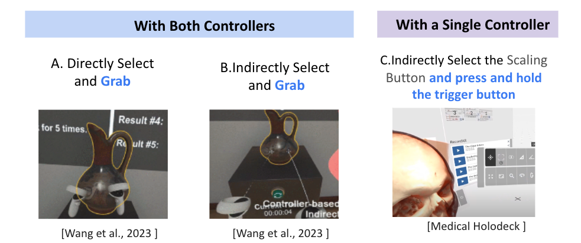
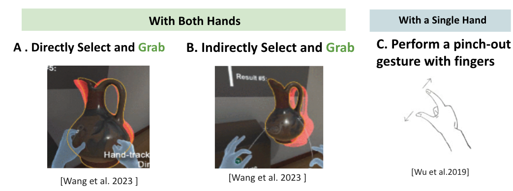
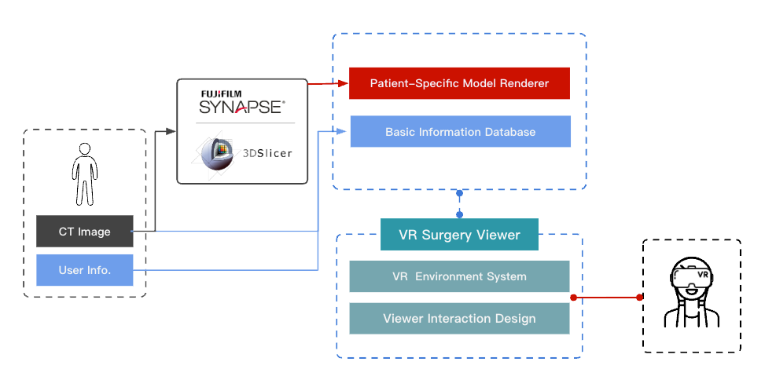
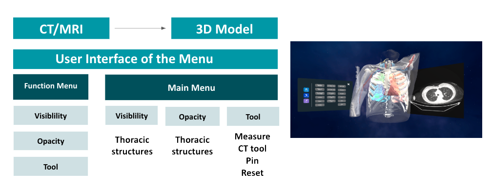
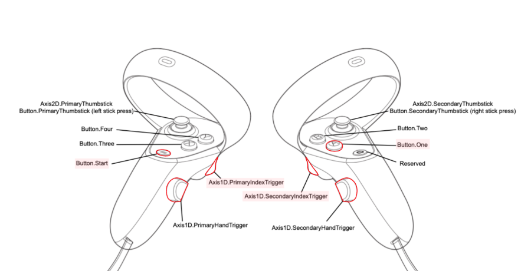
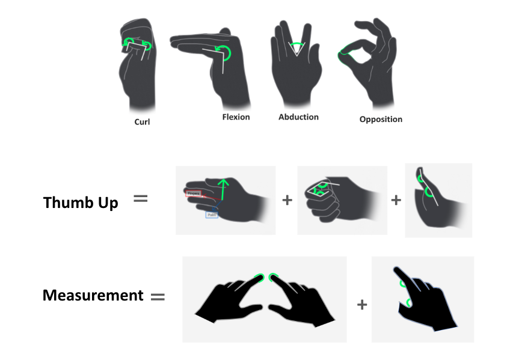
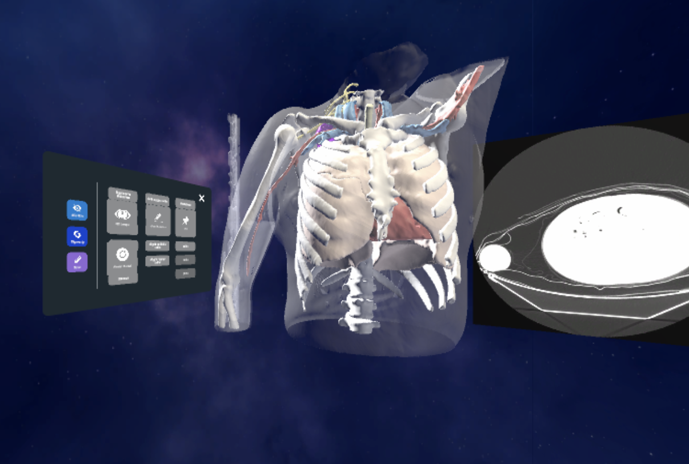
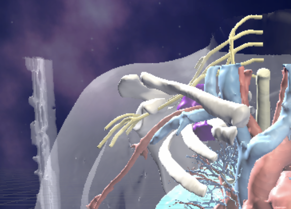
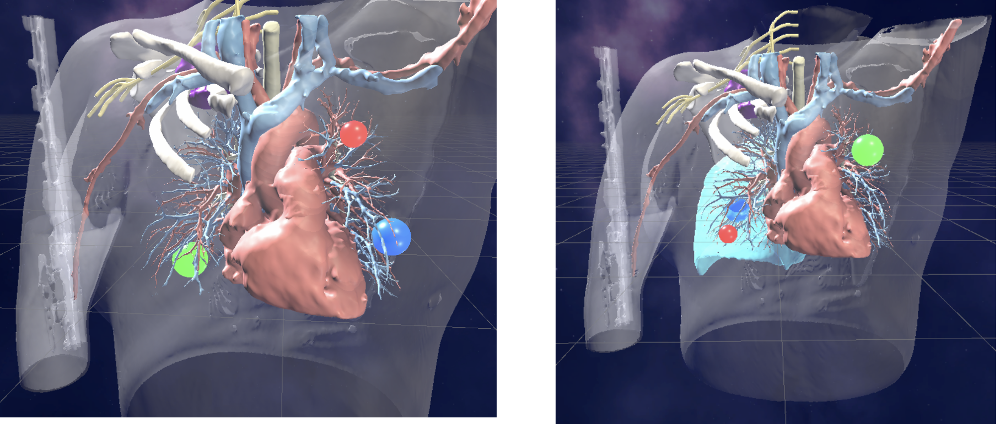

Dual-Modal VR Anatomy System
Reconstructed 3D thoracic anatomy models from real patient CT data, designed dual-modal interactions and three medical-specific tools to enhance spatial comprehension and learning efficiency in surgical anatomy education.
System Dev
Design Context
Traditional surgical anatomy education relies on cadavers, physical models, or 2D textbook illustrations. For thoracic surgical planning, surgeons need to precisely understand 3D spatial relationships between organs, lesions, and vessels — something 2D media struggles to convey.
This research project explores how VR can bridge that gap: reconstructing 3D thoracic anatomy models from real patient CT data, designing two complete input modalities, and building three medical-specific tools to enhance spatial comprehension and interaction efficiency in anatomy learning.
Challenges
- Dual-modal consistency: Controller and gesture have different operational instincts — both need to support all features while keeping the usage logic coherent.
- Gesture precision: Measurement tools require high spatial accuracy, but gesture detection introduces variability that affects measurement reliability.
- 3D spatial UI: Menus and tools operate in 3D space — they must not occlude the anatomy model while keeping the user's gaze flow natural.
What I Did
- Reconstructed 3D thoracic anatomy models from real patient CT data and integrated into Unity VR
- Designed and implemented controller modality: direct/indirect selection, translation/rotation, scaling
- Designed and implemented hand gesture modality: pinch-select, pinch-hold-grab, thumb-up menu summon, dual-index measurement
- Designed three medical-specific tools: CT Viewer, Measurement Tool, Model Material Replacement (opacity control)
- Designed 3D spatial menu UI and interaction flows
- Planned and conducted user testing: task-based tests (completion time, accuracy, error count) + SUS + USEQ + interviews
Research
Research covers two directions: controller-based VR interaction and hand gesture-based VR interaction — analyzing common interaction patterns in existing VR applications as the foundational reference for design.
Hand-held controllers deliver explicit button feedback and predictable precise manipulation
- Translation and Rotation: Moving the controller simultaneously changes the object's position and orientation — two operations in one gesture.
- Scaling: Moving controllers along a specific axis adjusts the object's size.

Hand gestures feel intuitive and natural, but precision-critical tasks face stability challenges
- Translation and Rotation: Moving the hand simultaneously changes position and orientation — same logic as controllers, minimizing the learning curve.
- Scaling: Pinch-hold the object with both hands and expand or contract to adjust size.

Design Process
Design covers three levels: overall system architecture, input mapping specifications (controller / gesture), and three interaction contexts (3D object manipulation, menu interaction, specialized tools). Both modalities were designed in parallel to ensure full feature coverage and consistent logic.
Starting from patient CT data, the VR environment integrates anatomy models with interactive tools


Six mapped operations across both modalities — consistent underlying logic
Controller Button Mapper
- Direct Selection:Move the controller close to the desired object.
- Indirect Selection:Aim the ray at the desired object.
- Trigger: PrimaryIndexTrigger or SecondaryIndexTrigger.
- Grab: PrimaryHandTrigger or SecondaryHandTrigger.
- Menu: Button.Start.
- Measurement: Button.One.

Hand Gestures
- Direct Selection:Move the hand close to the desired object.
- Indirect Selection:Aim the ray indicator (points only, no line) at the desired object.
- Trigger:After selecting, pinch and then release.
- Grab:After selecting, pinch and hold.
- Bring up Menu:Left hand thumb upgesture.
- Measurement: Touch index fingers togetherto start; move index fingers to draw the measurement line.

Both modalities designed in parallel, supporting identical translate, rotate, and scale operations
Translation & Rotation
Controller: Direct Select and Grab
Translation & Rotation
Gesture: Direct Select and Pinch-Hold
Scaling
Controller: Direct Select and Grab with both controllers
Scaling
Gesture: Direct Select and Pinch-Hold with both hands
3D spatial menu: freely summoned and repositioned to avoid occluding the anatomy view
Bring Up Menu
Press the menu button on the left controller.
Reposition Menu
Select the panel edge and grab to reposition.
Press Buttons
Directly or Indirectly Select and Trigger — both work.
Bring Up Menu
Left hand thumb-up gesture to summon menu.
Reposition Menu
Select the panel edge and pinch-hold to reposition.
Press Buttons
Directly or Indirectly Select and Trigger — both work.
Three medical-specific tools addressing the core needs of anatomy learning
Measurement Tool
Press the measurement button, move the controller to draw the line, release to complete.
CT Viewer Tool
Grab the red panel and move the controller vertically to browse CT slices.
Material Replacement Tool
Indirectly or directly select the button to change model material (opacity).
Measurement Tool
Touch index fingers together to start; trigger with right hand to complete.
CT Viewer Tool
Grab the red panel and move the hand vertically to browse CT slices.
Material Replacement Tool
Indirectly or directly select the button to change model material (opacity).
Results
A structured user testing process combining quantitative and qualitative methods evaluated the system's usability and learning support effectiveness.
Designed core tasks aligned with learning objectives: identifying lesion locations, measuring distances, and completing specific operations. Participants performed tasks in VR; three quantitative metrics collected as design validity indicators.

Task 1: Identifying Lesion Locations

Task 2: Measuring Distances

Task 3: Completing Specific Operations
Used the System Usability Scale (SUS) and USEQ to quantify subjective impressions of the interface and experience. Post-test interviews gathered qualitative insights on user emotions, challenges, and improvement suggestions. Both input modalities received positive evaluations; gesture interaction scored well on intuitiveness, but measurement accuracy still has room for improvement.
Reflection
This project revealed VR's genuine potential in medical education — not as a novelty, but as a tool that makes spatial relationships manipulable, measurable, and repeatedly confirmable.
Designing two input modalities in parallel gave me deep appreciation for the design complexity of "same function, different interaction instinct." Controllers offer explicit button feedback and precise manipulation; gestures feel naturally intuitive, but in contexts requiring precise spatial positioning — like measurement — stability is the real challenge.
Both modalities received positive evaluations, but "natural feel" and "precision" are sometimes not the same thing — this divergence is itself a meaningful design finding, and points directly to the core problem to solve next.
Key Takeaways
- VR makes spatial relationships — impossible to convey in 2D anatomy materials — directly manipulable: this is the core design value
- Dual-modal parallel design requires balancing "consistent logic" with "natural fit for each modality's instinct"
- Gestures work well for "feel-based" interactions (object manipulation, menus), but precision-critical interactions (measurement) still need supplementary design support
- The SUS + USEQ + interview triangulation captures the full picture of user experience better than any single scale
What's Next
Design assistive visual cues or redesign gestures to improve measurement precision; enable separate manipulation of individual thoracic structures; add expert-guided sessions and replayable lessons to fully support self-directed learning.